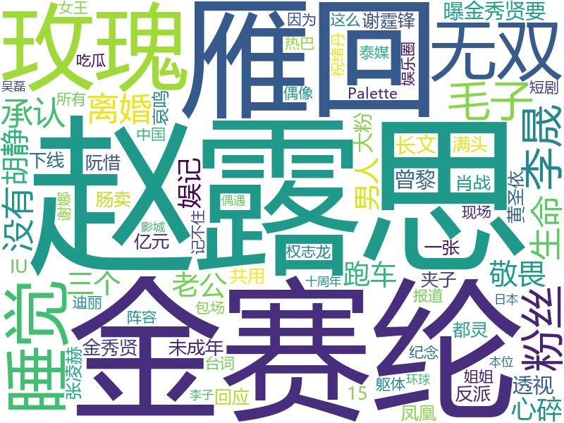
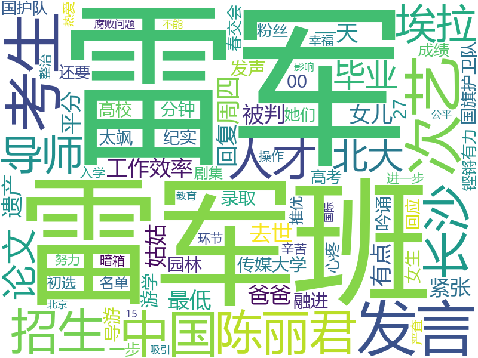

{% extends "new_layout_2.html" %}
{% load static %}
{% block css %}
{##}
{#    <link href="../static/css/bootstrap.min.css?v=3.4.0" rel="stylesheet">#}
    <link href="../static/font-awesome/css/font-awesome.css?v=4.3.0" rel="stylesheet">
    <link href="https://cdnjs.cloudflare.com/ajax/libs/font-awesome/4.7.0/css/font-awesome.min.css" rel="stylesheet">


{##}
{##}
{#    <!-- Data Tables -->#}
{#    <link href="../static/css/plugins/dataTables/dataTables.bootstrap.css" rel="stylesheet">#}
{#    <!-- Morris -->#}
{#        <link href="../static/css/plugins/morris/morris-0.4.3.min.css" rel="stylesheet">#}
{##}
{#    <link href="../static/css/animate.css" rel="stylesheet">#}
{#    <link href="../static/css/style.css?v=2.2.0" rel="stylesheet">#}
{##}
{##}

    <style>
        /* 浅蓝色主题变量 */


        /* 基础样式 */

        /* 标题样式 */
        .page-heading {
            background: linear-gradient(135deg, var(--accent-blue), var(--secondary-blue));
            color: #131111;
            border-radius: 8px;
            margin-bottom: 20px;
            box-shadow: 0 4px 6px rgba(0, 0, 0, 0.1);
            padding: 15px 20px;
        }

        .page-heading h2 {
            font-weight: 600;
            text-shadow: 1px 1px 2px rgba(0, 0, 0, 0.1);
            margin: 0;
        }

        /* 卡片样式 */
        .ibox {
            border-radius: 10px;
            box-shadow: 0 4px 12px rgba(102, 194, 255, 0.1);
            margin-bottom: 25px;
            background: white;
            border-top: 4px solid var(--accent-blue);
            transition: transform 0.3s ease, box-shadow 0.3s ease;
        }

        .ibox:hover {
            transform: translateY(-3px);
            box-shadow: 0 6px 16px rgba(102, 194, 255, 0.15);
        }

        .ibox-title {
            border-radius: 10px 10px 0 0;
            background-color: var(--primary-blue);
            padding: 15px 20px;
            border-bottom: 1px solid var(--border-blue);
            display: flex;
            justify-content: space-between;
            align-items: center;
        }

        .ibox-title h5 {
            font-weight: 600;
            color: var(--dark-blue);
            margin: 0;
        }

        .ibox-content {
            padding: 20px;
            border-radius: 0 0 10px 10px;
            background-color: white;
        }


        /* 页脚样式 */
        .footer {
            background: linear-gradient(135deg, var(--accent-blue), var(--secondary-blue));
            color: white;
            padding: 20px;
            border-radius: 8px;
            text-align: center;
            margin-top: 30px;
            box-shadow: 0 4px 6px rgba(0, 0, 0, 0.1);
        }

        .footer strong {
            font-weight: 600;
            font-size: 18px;
        }

        /* 图表容器样式 */
        #echarts-map-chart,
        #main1,
        #main2,
        #main3 {
            background-color: white;
            border-radius: 8px;
            padding: 15px;
            box-shadow: 0 4px 8px rgba(0, 0, 0, 0.05);
            border: 1px solid var(--border-blue);
            height: 100%;
            min-height: 400px;
        }

        /* 工具图标样式 */
        .ibox-tools a {
            color: var(--dark-blue);
            margin-left: 10px;
            transition: color 0.3s ease;
        }

        .ibox-tools a:hover {
            color: var(--accent-blue);
            text-decoration: none;
        }

        /* 响应式调整 */
        @media (max-width: 768px) {
            .ibox-title h5 {
                font-size: 16px;
            }

            .list-group-item {
                font-size: 14px;
                padding: 10px 15px;
            }


        }

        .dashboard-header {
            background: linear-gradient(135deg, #2c3e50 0%, #3498db 100%);
            padding: 30px 0;
            margin-bottom: 40px;
        }

        .stat-card {
            background: white;
            border-radius: 15px;
            margin: 15px;
            padding: 25px;
            box-shadow: 0 5px 25px rgba(0,0,0,0.1);
            transition: all 0.3s ease;
            border-left: 5px solid;
        }

        .stat-card:hover {
            transform: translateY(-5px);
            box-shadow: 0 10px 30px rgba(0,0,0,0.15);
        }

        .stat-icon {
            width: 60px;
            height: 60px;
            border-radius: 12px;
            display: flex;
            align-items: center;
            justify-content: center;
            font-size: 28px;
            color: white;
            margin-right: 20px;
        }

        .stat-content h3 {
            font-weight: 300;
            font-size: 1.4rem;
            color: #7f8c8d;
            margin-bottom: 5px;
        }

        .stat-value {
            font-size: 2.5rem;
            font-weight: 500;
            color: #2c3e50;
        }

        .progress {
            height: 8px;
            border-radius: 4px;
            background-color: #f8f9fa;
            margin-top: 15px;
        }

        /* 颜色定义 */
        .sentiment-index { border-color: #1abc9c; }
        .sentiment-index .stat-icon { background: #1abc9c; }

        .total-posts { border-color: #3498db; }
        .total-posts .stat-icon { background: #3498db; }

        .positive-posts { border-color: #2ecc71; }
        .positive-posts .stat-icon { background: #2ecc71; }

        .neutral-posts { border-color: #f1c40f; }
        .neutral-posts .stat-icon { background: #f1c40f; }

        .negative-posts { border-color: #e74c3c; }
        .negative-posts .stat-icon { background: #e74c3c; }
<!------------------------------------------------------------------------------->
              /* 自定义样式，让卡片更好看 */
       .user-card {
          border: 1px solid #ccc;
          border-radius: 10px;
          padding: 20px;
          margin-bottom: 20px;
          text-align: center;
          transition: all 0.3s ease;
        }

       .user-card:hover {
          box-shadow: 0 0 10px rgba(0, 0, 0, 0.2);
        }

       .user-avatar {
          width: 100px;
          height: 100px;
          border-radius: 50%;
          margin-bottom: 10px;
        }

       .user-name {
          font-size: 20px;
          margin-bottom: 5px;
        }

       .user-score {
          font-size: 18px;
          color: #666;
          margin-bottom: 10px;
        }

       .user-rank {
          font-size: 30px;
          font-weight: bold;
          margin-bottom: 5px;
        }

       .rank-badge {
          display: inline-block;
          padding: 5px 10px;
          border-radius: 5px;
          color: white;
        }

       .rank-badge-first {
          background-color: #FFC107;
        }

       .rank-badge-second {
          background-color: #6C757D;
        }

       .rank-badge-third {
          background-color: #DC3545;
        }

        </style>


{% endblock %}
{% block content %}

    <div class="row wrapper border-bottom white-bg page-heading">
        <div class="col-sm-4">
            <h2>情感分析</h2>
        </div>
    </div>
                <div class="card-body">
                    <div class="row">
                        <!-- 情感指数 -->
                        <div class="col-lg-6">
                            <div class="stat-card sentiment-index">
                                <div class="d-flex align-items-center">
                                    <div class="stat-icon">
                                        <i class="fas fa-smile"></i>
                                    </div>
                                    <div class="stat-content">
                                        <h3>情感指数</h3>
                                        <div class="d-flex align-items-center">
                                            <span class="stat-value">0.87</span>
                                            <span class="badge bg-success ms-3">+12%</span>
                                        </div>
                                        <div class="progress">
                                            <div class="progress-bar bg-success"
                                                 style="width: 87%"></div>
                                        </div>
                                    </div>
                                </div>
                            </div>
                        </div>

                        <!-- 检测发帖 -->
                        <div class="col-lg-6">
                            <div class="stat-card total-posts">
                                <div class="d-flex align-items-center">
                                    <div class="stat-icon">
                                        <i class="fas fa-comments"></i>
                                    </div>
                                    <div class="stat-content">
                                        <h3>检测发帖</h3>
                                        <div class="d-flex align-items-center">
                                            <span class="stat-value">14,320</span>
                                            <span class="badge bg-info ms-3">今日 +329</span>
                                        </div>
                                        <div class="progress">
                                            <div class="progress-bar bg-info"
                                                 style="width: 100%"></div>
                                        </div>
                                    </div>
                                </div>
                            </div>
                        </div>

                        <!-- 积极帖数 -->
                        <div class="col-lg-4">
                            <div class="stat-card positive-posts">
                                <div class="d-flex align-items-center">
                                    <div class="stat-icon">
                                        <i class="fas fa-sun"></i>
                                    </div>
                                    <div class="stat-content">
                                        <h3>积极帖数</h3>
                                        <span class="stat-value">8,739</span>
                                        <div class="progress">
                                            <div class="progress-bar bg-success"
                                                 style="width: 61%"></div>
                                        </div>
                                    </div>
                                </div>
                            </div>
                        </div>

                        <!-- 中性帖数 -->
                        <div class="col-lg-4">
                            <div class="stat-card neutral-posts">
                                <div class="d-flex align-items-center">
                                    <div class="stat-icon">
                                        <i class="fas fa-meh"></i>
                                    </div>
                                    <div class="stat-content">
                                        <h3>中性帖数</h3>
                                        <span class="stat-value">1,432</span>
                                        <div class="progress">
                                            <div class="progress-bar bg-warning"
                                                 style="width: 10%"></div>
                                        </div>
                                    </div>
                                </div>
                            </div>
                        </div>

                        <!-- 消极帖数 -->
                        <div class="col-lg-4">
                            <div class="stat-card negative-posts">
                                <div class="d-flex align-items-center">
                                    <div class="stat-icon">
                                        <i class="fas fa-frown"></i>
                                    </div>
                                    <div class="stat-content">
                                        <h3>消极帖数</h3>
                                        <span class="stat-value">4,149</span>
                                        <div class="progress">
                                            <div class="progress-bar bg-danger"
                                                 style="width: 29%"></div>
                                        </div>
                                    </div>
                                </div>
                            </div>
                        </div>
                    </div>
                </div>


        {#    --------------------------------------------------------------------------------#}
      <div class="container">
        <div class="row">
            <!-- 词云展示模块 (左侧) -->
            <div class="col-lg-6">
                <div class="ibox float-e-margins">
                    <div class="ibox-title">
                        <div class="panel blank-panel">
                            <div class="panel-options">
                                <ul class="nav nav-tabs">
                                    <li class="active"><a data-toggle="tab" href="#img-1">热搜榜</a></li>
                                    <li><a data-toggle="tab" href="#img-2">文娱</a></li>
                                    <li><a data-toggle="tab" href="#img-3">要闻</a></li>
                                    <li><a data-toggle="tab" href="#img-4">校园</a></li>
                                    <li><a data-toggle="tab" href="#img-5">体育</a></li>
                                    <li><a data-toggle="tab" href="#img-6">游戏</a></li>
                                </ul>
                            </div>
                        </div>
                    </div>
                    <div class="ibox-content">
                        <div class="panel-body">
                            <div class="tab-content">
                                <div id="img-1" class="tab-pane active">
                                    <div class="item active">
                                        
                                    </div>
                                </div>
                                <div id="img-2" class="tab-pane">
                                    <div class="item">
                                        
                                    </div>
                                </div>
                                <div id="img-3" class="tab-pane">
                                    <div class="item">
                                        
                                    </div>
                                </div>
                                <div id="img-4" class="tab-pane">
                                    <div class="item">
                                        
                                    </div>
                                </div>
                                <div id="img-5" class="tab-pane">
                                    <div class="item">
                                        
                                    </div>
                                </div>
                                <div id="img-6" class="tab-pane">
                                    <div class="item">
                                        
                                    </div>
                                </div>
                            </div>
                        </div>
                    </div>
                </div>
            </div>
            <!-- 各地区情感分析指数模块 (右侧) -->
            <div class="col-lg-6">
                <div class="ibox float-e-margins">
                    <div class="ibox-title">
                        <h5>V影响力top3</h5>
                        <div class="ibox-tools">
                            <a class="collapse-link">
                                <i class="fa fa-chevron-up"></i>
                            </a>
                            <a class="dropdown-toggle" data-toggle="dropdown" href="graph_flot.html#">
                                <i class="fa fa-wrench"></i>
                            </a>
                            <ul class="dropdown-menu dropdown-user">
                                <li><a href="graph_flot.html#">选项1</a></li>
                                <li><a href="graph_flot.html#">选项2</a></li>
                            </ul>
                            <a class="close-link">
                                <i class="fa fa-times"></i>
                            </a>
                        </div>
                    </div>
                    <div class="ibox-content">
                        <div class="row">
                            <!-- 第一名 -->
                            <div class="col-md-4">
                                <div class="user-card">
                                    
                                    <div class="user-name">少女叽__</div>
                                    <div class="user-score">89.75分</div>
                                    <div class="user-rank">
                                        <span class="rank-badge rank-badge-first">1</span>
                                    </div>
                                </div>
                            </div>
                            <!-- 第二名 -->
                            <div class="col-md-4">
                                <div class="user-card">
                                    
                                    <div class="user-name">戏精林克</div>
                                    <div class="user-score">85.44分</div>
                                    <div class="user-rank">
                                        <span class="rank-badge rank-badge-second">2</span>
                                    </div>
                                </div>
                            </div>
                            <!-- 第三名 -->
                            <div class="col-md-4">
                                <div class="user-card">
                                    
                                    <div class="user-name">蒙淇淇77</div>
                                    <div class="user-score">83.19分</div>
                                    <div class="user-rank">
                                        <span class="rank-badge rank-badge-third">3</span>
                                    </div>
                                </div>
                            </div>
                        </div>
                    </div>
                </div>
            </div>
        </div>
    </div>
    {#    -------------------------------------------------------------------------------------------------#}

    <div class="row">
        <div class="col-lg-7">
            <div class="ibox float-e-margins">
                <div class="ibox-title">
                    <h5>各地区情感分析指数</h5>
                    <div class="ibox-tools">
                        <a class="collapse-link">
                            <i class="fa fa-chevron-up"></i>
                        </a>
                        <a class="dropdown-toggle" data-toggle="dropdown" href="graph_flot.html#">
                            <i class="fa fa-wrench"></i>
                        </a>
                        <ul class="dropdown-menu dropdown-user">
                            <li><a href="graph_flot.html#">选项1</a>
                            </li>
                            <li><a href="graph_flot.html#">选项2</a>
                            </li>
                        </ul>
                        <a class="close-link">
                            <i class="fa fa-times"></i>
                        </a>
                    </div>
                </div>
                <div class="ibox-content">
                    <div style="height:600px" id="echarts-map-chart"></div>
                </div>
            </div>
        </div>
       <div class="row">  <!-- 添加外层 row 容器 -->
    <div class="col-lg-5">
        <div class="ibox float-e-margins">
            <div class="ibox-title">
                <h5>各类型榜单热度</h5>
                <div class="ibox-tools">
                    <a class="collapse-link">
                        <i class="fa fa-chevron-up"></i>
                    </a>
                    <a class="dropdown-toggle" data-toggle="dropdown" href="#">
                        <i class="fa fa-wrench"></i>
                    </a>
                    <ul class="dropdown-menu dropdown-user">
                        <li><a href="#">选项1</a></li>
                        <li><a href="#">选项2</a></li>
                    </ul>
                    <a class="close-link">
                        <i class="fa fa-times"></i>
                    </a>
                </div>
            </div>
            <div class="ibox-content">
                <div style="height:600px" id="idea"></div>
            </div>
        </div>
    </div>
</div>  <!-- 结束外层 row -->
  <script type="text/javascript"
                         src="https://fastly.jsdelivr.net/npm/echarts@5.4.2/dist/echarts.min.js"></script>
                <script>
                var chartDom = document.getElementById('idea');
                var myChart = echarts.init(chartDom);

                var option = {
                  tooltip: {
                    trigger: 'axis',
                    axisPointer: {
                      type: 'shadow'
                    }
                  },
                  grid: {
                    left: '3%',
                    right: '4%',
                    bottom: '3%',
                    containLabel: true
                  },
                  xAxis: [
                    {
                      type: 'category',
                      data: ['热搜', '文娱', '要闻', '校园', '游戏', '体育'],
                      axisTick: {
                        alignWithLabel: true
                      }
                    }
                  ],
                  yAxis: [
                    {
                      type: 'value'
                    }
                  ],
                  series: [
                    {
                      name: '热度值',
                      type: 'bar',
                      barWidth: '60%',
                      data: [6603402, 8945032, 3934256, 5980313, 4839621, 4972420],
                      itemStyle: {
                        color: '#85abff' // 推荐使用与网页风格一致的配色
                      }
                    }
                  ]
                };

                // 添加自适应响应
                window.addEventListener('resize', function() {
                    myChart.resize();
                });

                option && myChart.setOption(option);
                </script>


    <div class="row">
        <div class="col-lg-7">
            <div class="ibox float-e-margins">
                <div class="ibox-title">
                    <h5>各分类榜单——情感统计</h5>
                    <div class="ibox-tools">
                        <a class="collapse-link">
                            <i class="fa fa-chevron-up"></i>
                        </a>
                        <a class="dropdown-toggle" data-toggle="dropdown" href="graph_flot.html#">
                            <i class="fa fa-wrench"></i>
                        </a>
                        <ul class="dropdown-menu dropdown-user">
                            <li><a href="graph_flot.html#">选项1</a>
                            </li>
                            <li><a href="graph_flot.html#">选项2</a>
                            </li>
                        </ul>
                        <a class="close-link">
                            <i class="fa fa-times"></i>
                        </a>
                    </div>
                </div>
                <div class="ibox-content">
                    <div style="height:430px" id="main2"></div>
                    <script type="text/javascript"
                            src="https://fastly.jsdelivr.net/npm/echarts@5.4.2/dist/echarts.min.js"></script>

                    <script type="text/javascript">
                        var dom = document.getElementById('main2');
                        var myChart = echarts.init(dom, null, {
                            renderer: 'canvas',
                            useDirtyRect: false
                        });
                        var app = {};

                        var option;

                        option = {
                            legend: {},
                            tooltip: {},
                            dataset: {
                                dimensions: ['product', '积极', '中性', '消极'],
                                source: [
                                    {% for obj in huati_add_5 %}
                                        {
                                            product: '热搜',
                                            '积极': 6433,
                                            '中性':1233,
                                            '消极': 1340
                                        },
                                        {
                                            product: '文娱',
                                            '积极': 4131,
                                            '中性': 4123,
                                            '消极': 1123
                                        },
                                        {
                                            product: '校园',
                                            '积极': 4453,
                                            '中性': 2344,
                                            '消极': 2131
                                        },
                                        {
                                            product: '游戏',
                                            '积极': 3432,
                                            '中性': 2231,
                                            '消极': 1422
                                        },
                                        {
                                            product: '体育',
                                            '积极': 4231,
                                            '中性': 1231,
                                            '消极': 2432
                                        }
                                    {% endfor %}
                                ]
                            },
                            xAxis: {type: 'category'},
                            yAxis: {},
                            series: [
                                {type: 'bar', color: '#F08080'},
                                {type: 'bar', color: '#f9c956'},
                                {type: 'bar', color: '#ADD8E6'}
                            ]
                        };

                        if (option && typeof option === 'object') {
                            myChart.setOption(option);
                        }

                        window.addEventListener('resize', myChart.resize);
                    </script>
                </div>
            </div>
        </div>


        <div class="col-lg-5">
            <div class="ibox float-e-margins">
                <div class="ibox-title">
                    <h5>各分类榜单——情感指数</h5>
                    <div class="ibox-tools">
                        <a class="collapse-link">
                            <i class="fa fa-chevron-up"></i>
                        </a>
                        <a class="dropdown-toggle" data-toggle="dropdown" href="graph_flot.html#">
                            <i class="fa fa-wrench"></i>
                        </a>
                        <ul class="dropdown-menu dropdown-user">
                            <li><a href="graph_flot.html#">选项1</a>
                            </li>
                            <li><a href="graph_flot.html#">选项2</a>
                            </li>
                        </ul>
                        <a class="close-link">
                            <i class="fa fa-times"></i>
                        </a>
                    </div>
                </div>
                <div class="ibox-content">
                    <div style="height:430px" id="main3"></div>

                </div>
            </div>
        </div>
    </div>


    <div class="row">
        <div class="col-lg-12"></div>
        <div class="footer">
            <div>
                <strong>面向微博超话的情感检测系统</strong>
                <!--——————————————————————    最底下的那一行字——————————————————————————    -->
            </div>
        </div>
    </div>
{% endblock %}


{% block js %}
    <!-- Mainly scripts -->
    <script src="../static/js/jquery-2.1.1.min.js"></script>
{#    <script src="../static/js/bootstrap.min.js?v=3.4.0"></script>#}
{#    <script src="../static/js/plugins/metisMenu/jquery.metisMenu.js"></script>#}
{#    <script src="../static/js/plugins/slimscroll/jquery.slimscroll.min.js"></script>#}

{#    <script src="../static/js/plugins/jeditable/jquery.jeditable.js"></script>#}

{#    <script src="../static/js/plugins/morris/raphael-2.1.0.min.js"></script>#}
{#    <script src="../static/js/plugins/morris/morris.js"></script>#}

    <!-- Data Tables -->
{#    <script src="../static/js/plugins/dataTables/jquery.dataTables.js"></script>#}
{#    <script src="../static/js/plugins/dataTables/dataTables.bootstrap.js"></script>#}

    <!-- Custom and plugin javascript -->
{#    <script src="../static/js/hplus.js?v=2.2.0"></script>#}
{#    <script src="../static/js/plugins/pace/pace.min.js"></script>#}
{##}
{#    <!-- ECharts -->#}
    <script src="https://cdn.bootcdn.net/ajax/libs/jquery/3.6.0/jquery.min.js"></script>
<script src="https://cdn.bootcdn.net/ajax/libs/bootstrap/5.1.3/js/bootstrap.bundle.min.js"></script>
    <script src="../static/js/plugins/echarts/echarts-all.js"></script>


    <script>
    $(function () {
        var chartDom = document.getElementById('main3');
        var myChart = echarts.init(chartDom);
        var option;

        option = {
            tooltip: {
                trigger: 'axis',
                axisPointer: {
                    type: 'shadow'
                }
            },
            grid: {
                left: '3%',
                right: '4%',
                bottom: '3%',
                containLabel: true
            },
            xAxis: {
                type: 'value',
                axisLine: {
                    lineStyle: {
                        color: '#9cd0ff' // 浅蓝色坐标轴线
                    }
                },
                axisLabel: {
                    color: '#5b8ff9' // 浅蓝色坐标轴标签
                },
                splitLine: {
                    lineStyle: {
                        color: '#e6f7ff' // 浅色网格线
                    }
                }
            },
            yAxis: {
                type: 'category',
                data: ['热搜', '要闻', '文娱', '校园', '体育', '游戏'],
                axisLine: {
                    lineStyle: {
                        color: '#9cd0ff' // 浅蓝色坐标轴线
                    }
                },
                axisLabel: {
                    color: '#5b8ff9' // 浅蓝色坐标轴标签
                }
            },
            series: [
                {
                    name: '情感指数',
                    type: 'bar',
                    data: [0.68, 0.71, 0.82, 0.75, 0.85, 0.78],
                    itemStyle: {
                        color: function(params) {
                            // 浅蓝色渐变
                            var colorList = [
                                new echarts.graphic.LinearGradient(0, 0, 1, 0, [
                                    { offset: 0, color: '#b0d5ff' },
                                    { offset: 1, color: '#5b8ff9' }
                                ])
                            ];
                            return colorList[params.dataIndex % colorList.length];
                        },
                        borderRadius: [0, 4, 4, 0] // 圆角
                    },
                    label: {
                        show: true,
                        position: 'right',
                        color: '#5b8ff9' // 浅蓝色标签
                    }
                }
            ]
        };

        option && myChart.setOption(option);
    });
</script>


    <script>
    $(function () {
        // 替换地图为组合图表
        var comboChart = echarts.init(document.getElementById("echarts-map-chart"));

        // 数据准备
        var emotionData = [
            {name: '北京', value: 0.8925},
            {name: '天津', value: 0.9034},
            {name: '上海', value: 0.8256},
            {name: '重庆', value: 0.8313},
            {name: '河北', value: 0.8545},
            {name: '河南', value: 0.7813},
            {name: '云南', value: 0.6624},
            {name: '辽宁', value: 0.9045},
            {name: '黑龙江', value: 0.6227},
            {name: '湖南', value: 0.8189},
            {name: '安徽', value: 0.8355},
            {name: '山东', value: 0.7824},
            {name: '新疆', value: 0.7826},
            {name: '江苏', value: 0.8543},
            {name: '浙江', value: 0.8325},
            {name: '江西', value: 0.8486},
            {name: '湖北', value: 0.8613},
            {name: '广西', value: 0.8113},
            {name: '甘肃', value: 0.6468},
            {name: '山西', value: 0.8622},
            {name: '内蒙古', value: 0.8135},
            {name: '陕西', value: 0.8519},
            {name: '吉林', value: 0.8716},
            {name: '福建', value: 0.6232},
            {name: '贵州', value: 0.7317},
            {name: '广东', value: 0.7521},
            {name: '青海', value: 0.8316},
            {name: '西藏', value: 0.7275},
            {name: '四川', value: 0.8113},
            {name: '宁夏', value: 0.8456},
            {name: '海南', value: 0.7124},
            {name: '台湾', value: 0.8187},
            {name: '香港', value: 0.8514},
            {name: '澳门', value: 0.7832}
        ];

        // 按情感指数排序
        emotionData.sort(function(a, b) {
            return b.value - a.value;
        });

        // 取前10名和后10名用于柱状图
        var top10 = emotionData.slice(0, 10);
        var bottom10 = emotionData.slice(-10).reverse();

        // 雷达图指标（取东、西、南、北、中部代表省份）
        var radarIndicator = [
            {name: '东北(辽宁)', max: 1},
            {name: '华北(北京)', max: 1},
            {name: '华东(上海)', max: 1},
            {name: '华南(广东)', max: 1},
            {name: '华中(湖北)', max: 1},
            {name: '西南(四川)', max: 1},
            {name: '西北(陕西)', max: 1}
        ];

        // 雷达图数据
        var radarData = [
            {
                value: [
                    0.9045, // 辽宁
                    0.8925, // 北京
                    0.8256, // 上海
                    0.7521, // 广东
                    0.8613, // 湖北
                    0.8113, // 四川
                    0.8519  // 陕西
                ],
                name: '各大区代表'
            }
        ];

        var comboOption = {
            title: {
                text: '各地区情感分析指数对比',
                left: 'center'
            },
            tooltip: {
                trigger: 'item'
            },
            grid: [
                {left: '5%', top: '15%', width: '38%', height: '75%'}, // 左柱状图
                {right: '5%', top: '15%', width: '38%', height: '75%'}, // 右柱状图
                {left: '45%', top: '60%', width: '10%', height: '30%'}  // 雷达图
            ],
            xAxis: [
                { // 左柱状图 - 前10名
                    gridIndex: 0,
                    type: 'value',
                    min: 0.6,
                    max: 1,
                    axisLabel: {
                        formatter: '{value}'
                    }
                },
                { // 右柱状图 - 后10名
                    gridIndex: 1,
                    type: 'value',
                    min: 0.6,
                    max: 1,
                    inverse: true,
                    axisLabel: {
                        formatter: '{value}'
                    }
                }
            ],
            yAxis: [
                { // 左柱状图
                    gridIndex: 0,
                    type: 'category',
                    data: top10.map(function(item) {
                        return item.name;
                    }),
                    axisLabel: {
                        interval: 0,
                        rotate: 30
                    }
                },
                { // 右柱状图
                    gridIndex: 1,
                    type: 'category',
                    data: bottom10.map(function(item) {
                        return item.name;
                    }),
                    axisLabel: {
                        interval: 0,
                        rotate: 30
                    }
                }
            ],
            radar: {
                indicator: radarIndicator,
                center: ['50%', '75%'],
                radius: '25%',
                splitNumber: 4,
                axisName: {
                    color: '#333'
                },
                splitArea: {
                    areaStyle: {
                        color: ['rgba(255, 255, 255, 0.5)']
                    }
                },
                axisLine: {
                    lineStyle: {
                        color: 'rgba(0, 0, 0, 0.2)'
                    }
                },
                splitLine: {
                    lineStyle: {
                        color: 'rgba(0, 0, 0, 0.2)'
                    }
                }
            },
            series: [
                { // 左柱状图 - 前10名
                    name: '情感指数TOP10',
                    type: 'bar',
                    xAxisIndex: 0,
                    yAxisIndex: 0,
                    data: top10,
                    itemStyle: {
                        color: function(params) {
                            // 渐变色
                            var colorList = [
                                new echarts.graphic.LinearGradient(0, 0, 1, 0, [
                                    {offset: 0, color: '#f7d070'},
                                    {offset: 1, color: '#f7a270'}
                                ])
                            ];
                            return colorList[params.dataIndex % colorList.length];
                        },
                        barBorderRadius: [0, 5, 5, 0]
                    },
                    label: {
                        show: true,
                        position: 'right',
                        formatter: '{c}'
                    }
                },
                { // 右柱状图 - 后10名
                    name: '情感指数BOTTOM10',
                    type: 'bar',
                    xAxisIndex: 1,
                    yAxisIndex: 1,
                    data: bottom10,
                    itemStyle: {
                        color: function(params) {
                            // 渐变色
                            var colorList = [
                                new echarts.graphic.LinearGradient(0, 0, 1, 0, [
                                    {offset: 0, color: '#6fb3e0'},
                                    {offset: 1, color: '#6f9ce0'}
                                ])
                            ];
                            return colorList[params.dataIndex % colorList.length];
                        },
                        barBorderRadius: [5, 0, 0, 5]
                    },
                    label: {
                        show: true,
                        position: 'left',
                        formatter: '{c}'
                    }
                },
                { // 雷达图
                    name: '大区分布',
                    type: 'radar',
                    data: radarData,
                    areaStyle: {
                        opacity: 0.3
                    },
                    lineStyle: {
                        width: 2
                    },
                    symbolSize: 4,
                    itemStyle: {
                        color: '#d14a61'
                    }
                }
            ],
            toolbox: {
                show: true,
                feature: {
                    dataView: {readOnly: false},
                    restore: {},
                    saveAsImage: {}
                }
            },
            graphic: [
                { // 添加标题文本
                    type: 'text',
                    left: 'center',
                    top: '55%',
                    style: {
                        text: '各大区情感指数分布',
                        fill: '#333',
                        fontSize: 14,
                        fontWeight: 'bold'
                    }
                }
            ]
        };

        comboChart.setOption(comboOption);
    });
</script>
    <script>
        $(document).ready(function () {
            $('.chart').easyPieChart({
                barColor: '#f8ac59',
                //                scaleColor: false,
                scaleLength: 5,
                lineWidth: 4,
                size: 80
            });

            $('.chart2').easyPieChart({
                barColor: '#1c84c6',
                //                scaleColor: false,
                scaleLength: 5,
                lineWidth: 4,
                size: 80
            });

            var d1 = [
                [1262304000000, 1],
                [1264982400000, 100],
                [1267401600000, 1],
                [1270080000000, 200],
                [1272672000000, 1],
                [1275350400000, 100],
                [1277942400000, 1],
                [1280620800000, 300]
            ];
            var d2 = [
                [1262304000000, 100],
                [1264982400000, 1],
                [1267401600000, 150],
                [1270080000000, 1],
                [1272672000000, 230],
                [1275350400000, 1],
                [1277942400000, 150],
                [1280620800000, 10]
            ];

            var data3 = [
                {
                    label: "Data 1",
                    data: d1,
                    color: '#23c6c8'
                },
                {
                    label: "Data 2",
                    data: d2,
                    color: '#1ab394'
                }
            ];
            $.plot($("#flot-chart3"), data3, {
                xaxis: {
                    tickDecimals: 0
                },
                series: {
                    lines: {
                        show: true,
                        fill: true,
                        fillColor: {
                            colors: [{
                                opacity: 1
                            }, {
                                opacity: 1
                            }]
                        },
                    },
                    curvedLines: {
                        active: true,
                        fit: true,
                        apply: true
                    },
                    points: {
                        width: 0.1,
                        show: false
                    },
                },
                grid: {
                    show: false,
                    borderWidth: 0
                },
                legend: {
                    show: false,
                }
            });


            var mapData = {
                "US": 298,
                "SA": 200,
                "DE": 220,
                "FR": 540,
                "CN": 120,
                "AU": 760,
                "BR": 550,
                "IN": 200,
                "GB": 120,
            };

            $('#world-map').vectorMap({
                map: 'world_mill_en',
                backgroundColor: "transparent",
                regionStyle: {
                    initial: {
                        fill: '#e4e4e4',
                        "fill-opacity": 0.9,
                        stroke: 'none',
                        "stroke-width": 0,
                        "stroke-opacity": 0
                    }
                },

                series: {
                    regions: [{
                        values: mapData,
                        scale: ["#1ab394", "#22d6b1"],
                        normalizeFunction: 'polynomial'
                    }]
                },
            });
        });
    </script>


{% endblock %}